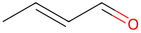

平成24年度 問3 有機化学及び燃料
アセトアルデヒドに低温で少量の水酸化ナトリウムの希釈水溶液を加えると3－ヒドロキシブチルアルデヒドが生成し、このアルデヒドを加熱すると分子内脱水反応が進行してクロトンアルデヒドが得られる。この反応は次のうちどれか。
①
Claisen縮合反応
②
Aldol縮合反応
③
Michael付加反応
④
Perkin反応
⑤
Cannizzaro反応
正答
② Aldol縮合反応
クロトンアルデヒドは以下のようなアルケンを持つアルデヒドです。

分子内脱水が起きていることから、脱水前は二重結合部分に-Hと-OHがついていたことが推測できます。
この反応では、まず強塩基によりアセトアルデヒドのカルボニルのα炭素に結合した水素が引き抜かれることでエノラートが生成します。エノラートのC–が、別のアセトアルデヒドのカルボニル炭素へ求核攻撃することでβ-ヒドロキシカルボニル化合物を生成します。この反応をアルドール付加と呼びます。
β-ヒドロキシカルボニル化合物は容易に脱水を起こして、α,β-不飽和カルボニル化合物を生成します。アルドール付加から脱水までの一連の反応をアルドール縮合と呼びます。
エノラートがエステルと反応するときはクライゼン縮合（1番）と呼びます。生成物はβ-ケトエステルです。
3番のマイケル付加は、エノラートのα,β-不飽和カルボニル化合物への付加反応です。
4番のパーキン反応は、酸無水物を用いて芳香族アルデヒドやケトンと脱水縮合し、置換オレフィンを生成する反応です。
5番のカニッツァロ反応は、α水素を持たないアルデヒド（例えばベンズアルデヒド）を水酸化ナトリウム水溶液中加熱することで、アルコールとカルボン酸が得られる反応です。α水素を持たないためアルドール縮合が起きません。